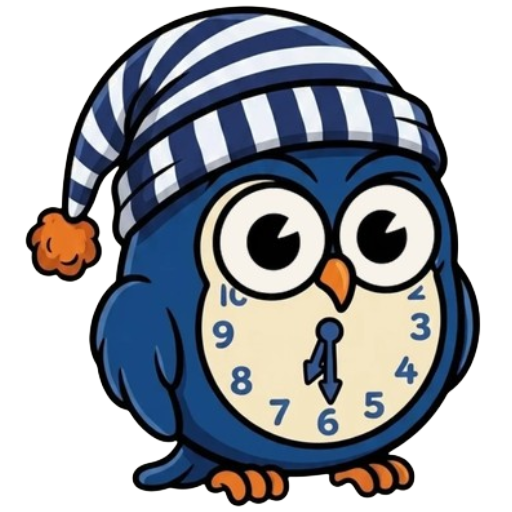

Tutto quello che vedi qui sotto è calcolato da uno script contenuto in questa pagina. Se stai leggendo questo messaggio, quello script non è stato eseguito fino in fondo.
Quasi sempre è l'hosting che lo riscrive o lo blocca. Su Cloudflare, in Speed → Optimization, devono essere spenti Rocket Loader e la minificazione automatica del JavaScript. Se hai impostato una Content-Security-Policy, deve consentire gli script inline.
Se invece hai disattivato JavaScript nel browser, questo strumento non può funzionare: fa tutti i calcoli sul tuo dispositivo, senza mandare niente a un server.
Non coincide con la configurazione che hai già su questo telefono.
Segui il tuo ciclo di turni e Notturnisti ti dice, giorno per giorno, quando dormire, quando prendere luce e quando fermarti col caffè — così il corpo fa meno fatica a stare al passo. Due minuti per iniziare.
Scegli lo schema più vicino ai tuoi. Non c'è il tuo? Scegli Personalizza e te lo costruisci in due minuti.
Tocca la lettera che corrisponde a oggi: serve a capire a che punto sei del ciclo.
Senza sveglia, quando dormi di solito? Da qui discendono quanto sonno ti serve e com'è fatto il tuo orologio. È la cosa che rende il piano davvero tuo — ma puoi anche saltare e vederlo subito.
Cambiano il calcolo in base a te — dagli un'occhiata, non sono uguali per tutti.
Sta tutta in un link — se la perdi, la riscrivi da capo.
Per chi non ha un ciclo che si ripete. Tocca un giorno per cambiarne il turno; — è riposo. Vale così come lo imposti, senza ripetersi.
Cosa fai davvero questo giorno
È un giorno in cui devi essere lucido?
Se scambiassi questo turno
Quello che i tuoi voti dicono sul ciclo, con il tempo.
Le ore in cui non lavori e non dovresti dormire, nei prossimi sette giorni. Sono contate al netto del viaggio: quelle in cui puoi prendere un appuntamento davvero.
Tutto quello che si imposta una volta e poi non si tocca più.
Come ragiona. Non guarda la sigla del turno ma dove cade rispetto al tuo sonno naturale. Un turno che comincia prima della notte e la attraversa vuole il sonno dopo; uno che comincia alle due di notte lo vuole prima, più un recupero al rientro. Poi usa i riposi come rincorsa: circa un'ora al giorno per alzarsi prima, un'ora e mezza per fare più tardi. Dove la rincorsa non basta, lo dice.
Limiti dichiarati. La domanda sul cronotipo è una scorciatoia rispetto al questionario MCTQ. La curva della luce viene da studi di laboratorio, non da un reparto. L'adattamento completo alla notte riguarda meno del 3% dei notturnisti fissi, e questo strumento non lo promette. Nessuna validazione clinica: è un motore di pianificazione basato sulla letteratura.
Attenzione. Indicazioni generali di benessere e organizzazione per chi lavora su turni. Non è un dispositivo medico, non diagnostica e non cura nulla, e non sostituisce il parere di un medico.
Melatonina. Non ne parliamo qui perché i dosaggi degli studi sul jet lag e sui turni non coincidono con quelli in vendita come integratore in Italia — proporre un numero sarebbe fuorviante. Se pensi possa servirti, parlane con un medico o un farmacista: possono valutare il tuo caso, non un piano generico.
I tuoi turni e quello che annoti non escono da questa pagina: restano nel link e nel tuo browser.
Come un link qualsiasi: la fotocamera lo riconosce da sola, non serve un'app apposita.
Il turno lo sai già, quindi non ti avvisa: l'evento c'è, la sveglia no. Gli altri hanno un promemoria acceso solo dove un orario preciso conta davvero — puoi comunque accenderli tutti, se li vuoi.